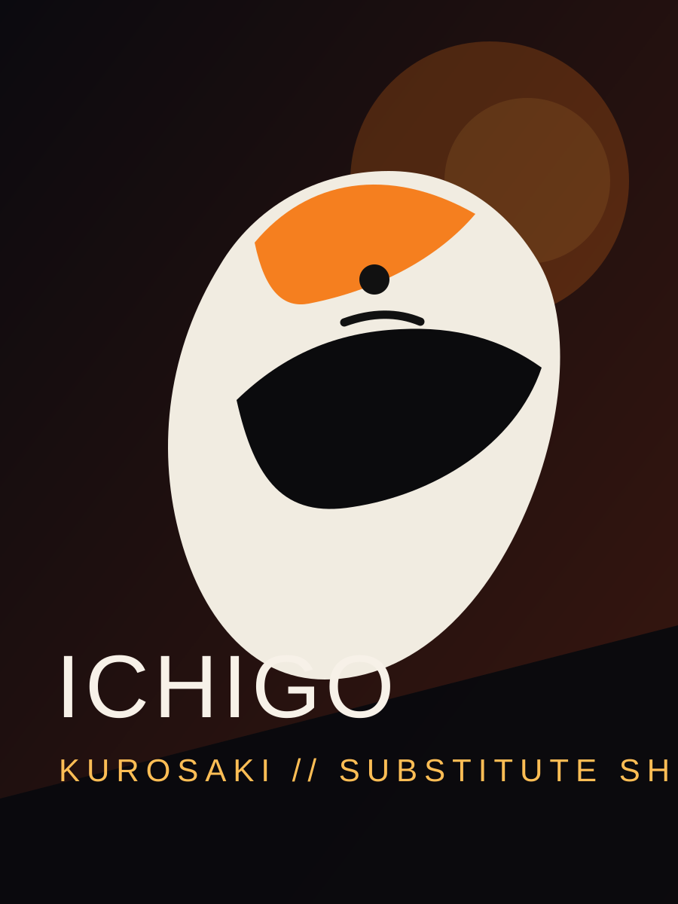
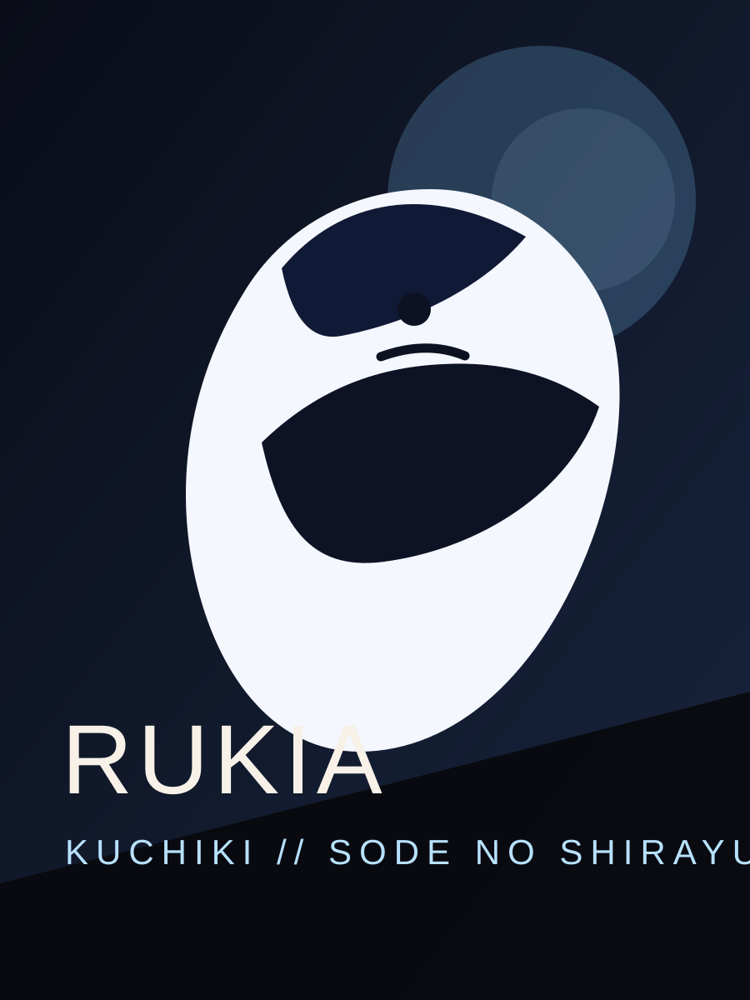
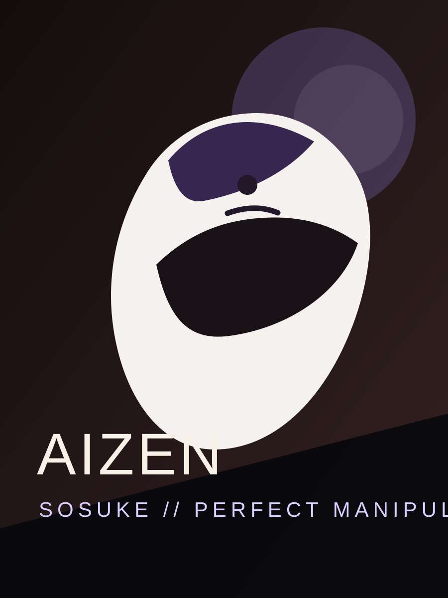
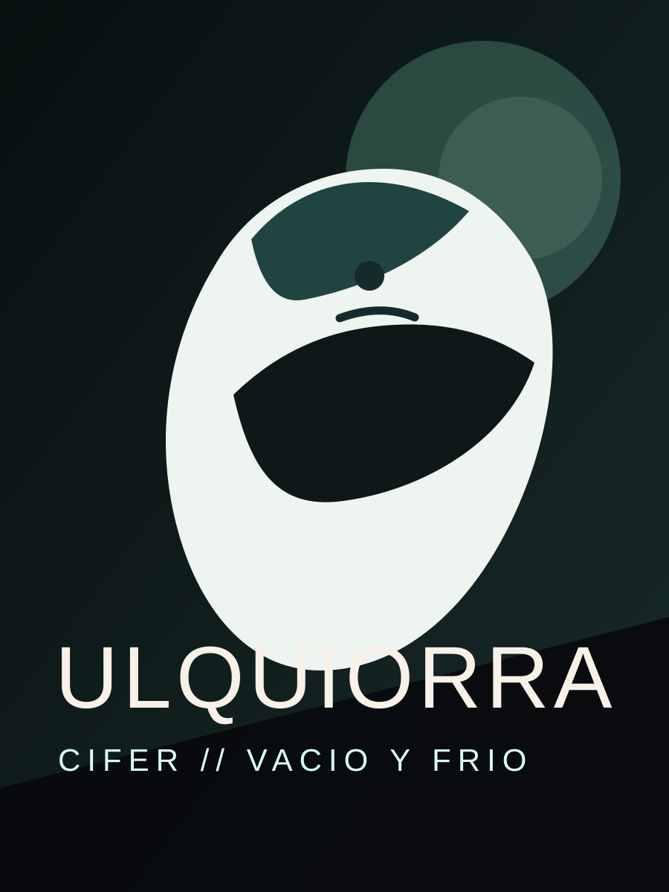
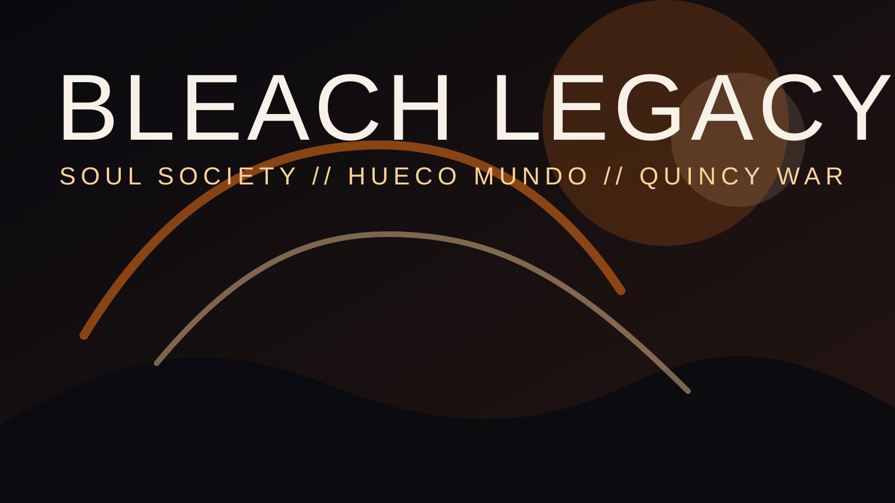
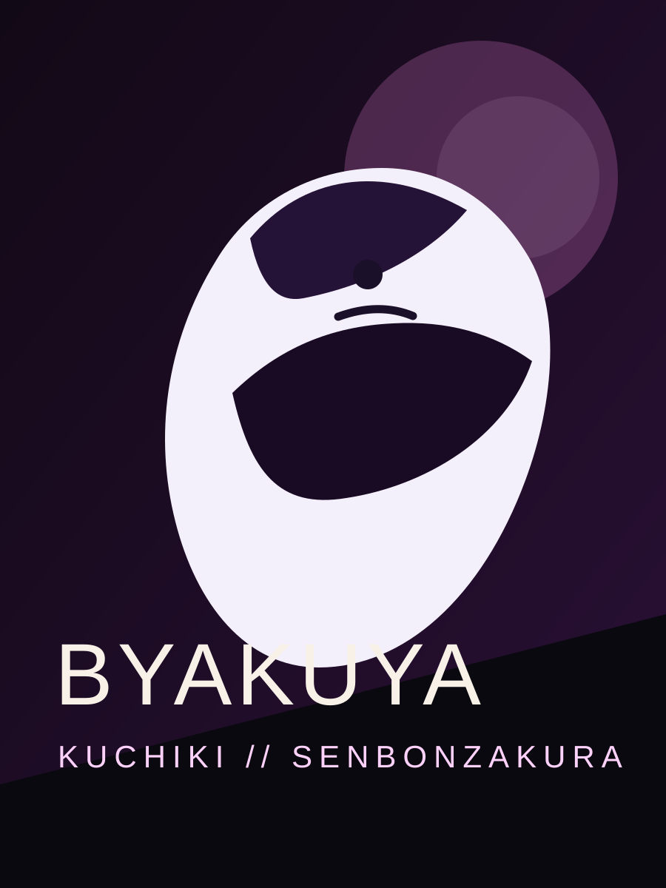
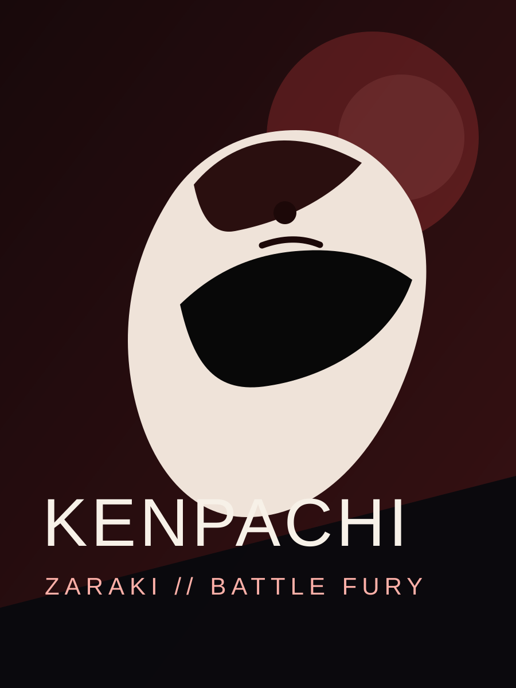
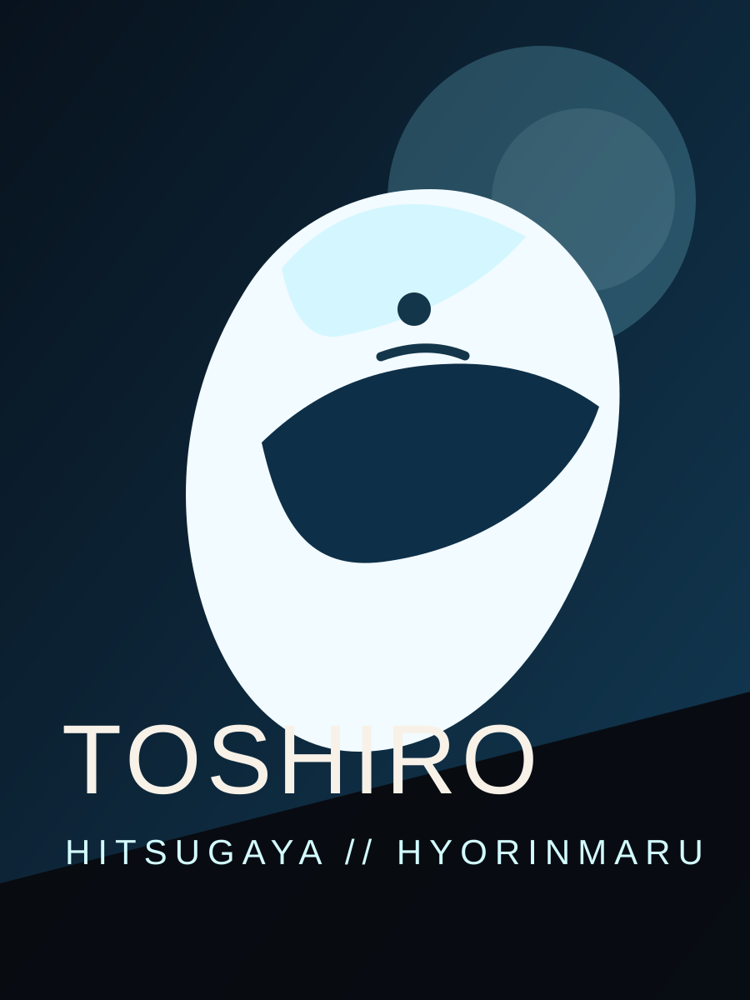
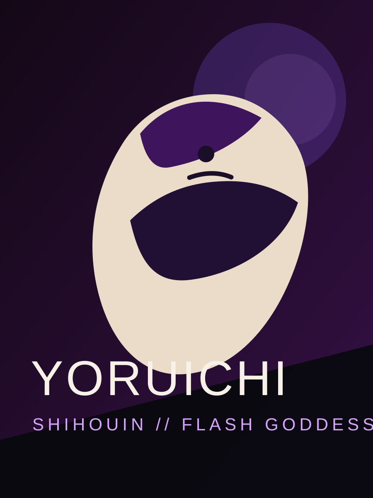

Fansite Cinematografico
Bleach em modo lendario
Uma experiencia visual dedicada aos personagens mais marcantes, aos arcos mais explosivos e a energia espiritual que fez Bleach virar referencia no mundo dos animes.

Destaques
Os rostos que definem Bleach

Soul Society
Rukia Kuchiki
A personagem que acende toda a jornada, unindo elegancia, coragem e um dos caminhos mais bonitos da serie.

Vilao Iconico
Sosuke Aizen
Carisma, manipulacao e uma presenca que muda completamente o tom da historia sempre que aparece.

Hueco Mundo
Ulquiorra Cifer
Frieza, design impecavel e uma das lutas mais inesqueciveis de Bleach em intensidade e simbolismo.
Sagas
Arcos que deixaram cicatriz
Substitute Shinigami
O inicio da lenda. Ichigo desperta, conhece Rukia e percebe que proteger os outros vai custar muito mais do que ele imaginava.
Soul Society
Talvez o arco mais querido por muitos fas: resgate, batalhas entre capitoes e revelacoes que transformam a serie em algo maior.
Arrancar e Hueco Mundo
Bleach fica mais sombrio, estiloso e brutal. Os Espadas entram em cena e a tensao cresce em cada confronto.
Thousand-Year Blood War
A guerra definitiva, com visual cinematografico, traicoes, escalas de poder absurdas e peso emocional real.
Faccoes
Quatro lados, um mesmo caos espiritual
Shinigamis
Guardioes do equilibrio espiritual e donos de algumas das melhores espadas e Bankais dos animes.
Hollows
Monstros nascidos da perda e do vazio, sempre ligados ao lado mais sombrio do universo.
Arrancars
Hollows que ultrapassaram limites e ganharam forma humanoide, poder refinado e designs memoraveis.
Quincies
Guerreiros espirituais que trouxeram uma guerra total e viraram a mesa no conflito final de Bleach.
Visual
Mais imagens para completar a experiencia





Continuar
Quer mais Bleach? O resto do site tambem ficou mais completo.
Na pagina dos personagens tem ranking, destaques e painel interativo. Na pagina do universo tem clima, faccoes, poderes e uma visao geral bem mais rica da serie.